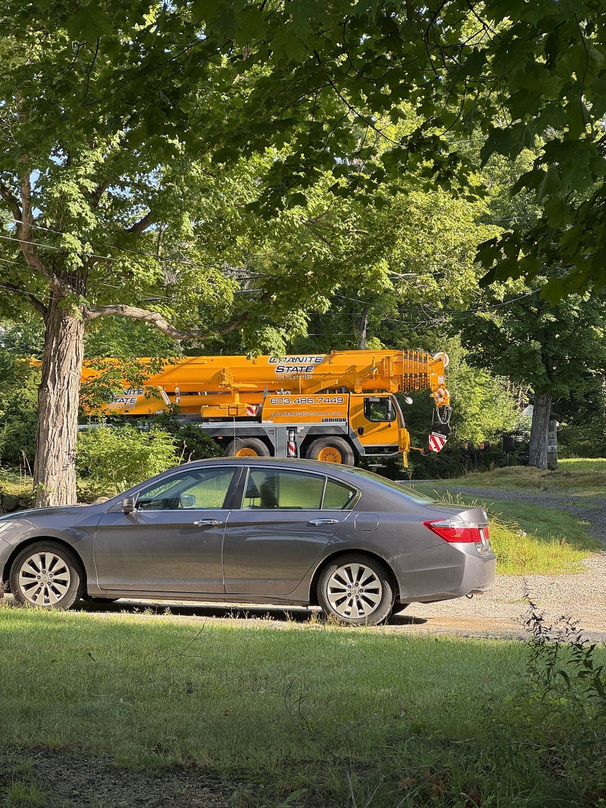
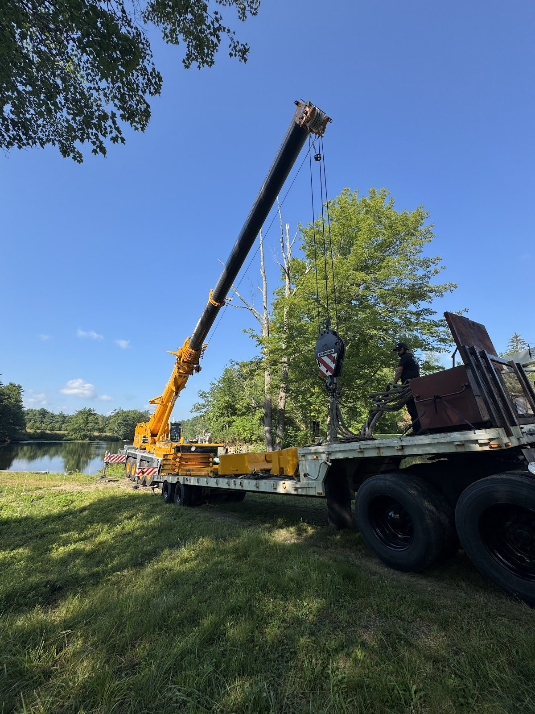
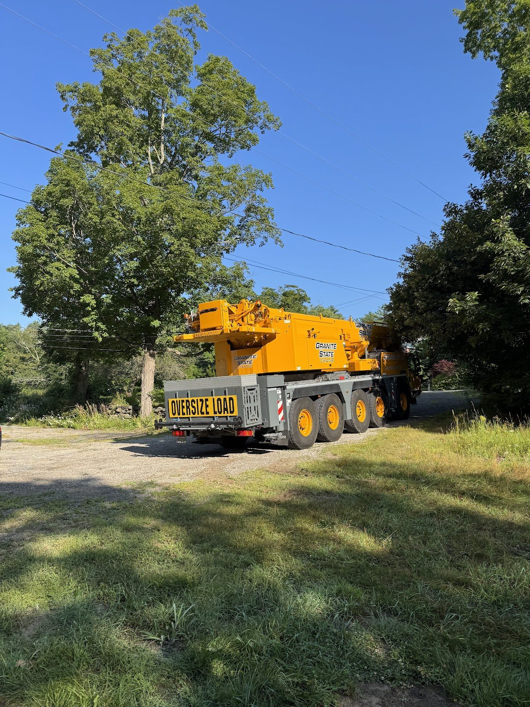
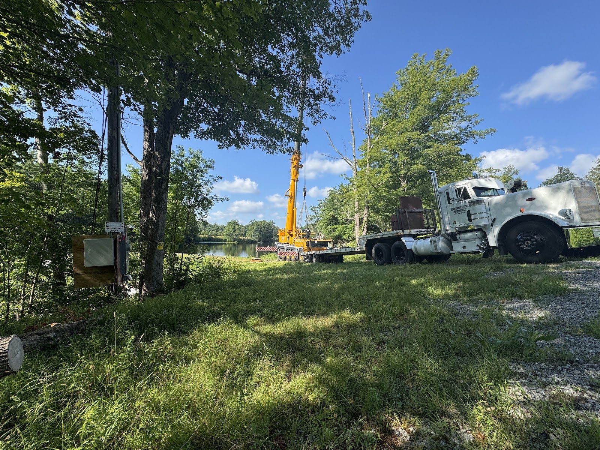

Drawdown No. 2: The Big Overhaul Begins

Here we go again — and this time it's the main event.
On July 22nd we went before the New Ipswich Selectmen (notice again published in the Monadnock Ledger-Transcript) to present the plan for a second drawdown of Waterloom Pond. On July 23rd, it began.




Where the 2024 drawdown was an emergency repair with a single focus, this one is the full overhaul — the reason this project exists. With the pond down, we'll be working in and around the headgate, intake, and penstock for months. The worklist is long:
The old turbine, draft tubes, and generator come out of the water passages. The new draft tube and turbine go in. The trash racks — the steel screens that keep debris out of the intake — come out for complete replacement. The headgate machinery gets rebuilt. The penstock gets inspected and rehabilitated from the inside. And a coffer dam goes up so all of this can happen in a dry, safe work area downstream of the headgate.
We know from experience now that the pond takes weeks to come down at a responsible rate, and we know what a drawdown asks of the pond's neighbors. We don't do this casually. The plan has been coordinated with the state, the town is informed, and the work is sequenced to get the pond back up as soon as the water-side work allows.
The crane is booked. The new machinery is waiting. Next week, the old turbine sees daylight for the first time in a very long while.